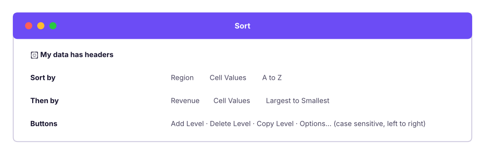
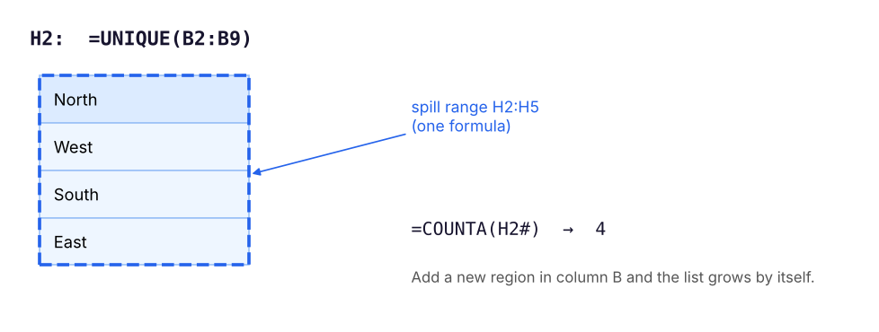

Organise data with single and multi-level sorts and custom orders, find what matters with AutoFilter and Advanced Filter, and then let formulas do it for you with the dynamic array functions UNIQUE, SORT, SORTBY, FILTER and SEQUENCE, plus the power tool SUMPRODUCT.
● Live class 4✦ Excel for Microsoft 365, 2026Beginner–Intermediate⏱ 110 min
We will use this small sales table (sheet Reps, range A1:F9) so every result is easy to check by hand. Revenue is =D2*E2.
XReps: sample sales table
A
B
C
D
E
F
1
Rep
Region
Product
Units
Price
Revenue
2
Asha
North
Laptop
5
55,000
275,000
3
Ravi
West
Phone
12
18,000
216,000
4
Meera
South
Laptop
3
55,000
165,000
5
Kabir
North
Tablet
8
25,000
200,000
6
Zoya
East
Phone
15
18,000
270,000
7
Farhan
West
Laptop
4
55,000
220,000
8
Neha
South
Tablet
10
25,000
250,000
9
Rohan
North
Phone
9
18,000
162,000
F2=D2*E2
Each pattern is copied down/across to the other cells in its column.
Sorting
Quick sort
Click any cell in a column and use Data → Sort A to Z or Sort Z to A (or Home → Sort & Filter). Excel detects the table around the cell and keeps each row together.
Watch outNever sort a single selected column
If you select only one column and sort, Excel asks whether to "expand the selection". Choosing "Continue with the current selection" sorts that column alone and scrambles your data: names no longer match their revenue. Always click a single cell inside the table, or select the whole table.
Multi-level (level-wise) sort
Data → Sort opens the Sort dialog, where you add levels. Excel sorts by the first level, then breaks ties with the next.

The Sort dialog with two levels: Region A to Z, then Revenue largest to smallest.
XResult: Region A→Z, then Revenue high→low
A
B
C
D
1
Rep
Region
Product
Revenue
2
Zoya
East
Phone
270,000
3
Asha
North
Laptop
275,000
4
Kabir
North
Tablet
200,000
5
Rohan
North
Phone
162,000
6
Neha
South
Tablet
250,000
7
Meera
South
Laptop
165,000
8
Farhan
West
Laptop
220,000
9
Ravi
West
Phone
216,000
Other sort options
Option
Where
Example
Custom list
Order → Custom List
Sort months Jan, Feb, Mar instead of alphabetically; sort sizes S, M, L, XL; sort priority High, Medium, Low
Sort by colour
Sort On → Cell Color / Font Color / Conditional Formatting Icon
Put all red-flagged rows on top
Left to right
Options → Sort left to right
Reorder columns by a header row
Case sensitive
Options
Rarely needed
Random order
Add a column =RAND() and sort by it
Draw a random sample
TipKeep the original order
Before sorting raw data, add an Index column with 1, 2, 3 … (type 1 and 2, double-click the fill handle). You can always sort by Index to get back to the original order.
Filtering
AutoFilter
Click inside the data and press Ctrl + Shift + L (Data → Filter). Every header gets a drop-down arrow.
Filter type
Options
Text filters
Equals, does not equal, begins with, ends with, contains, does not contain, custom (with * and ?)
Number filters
Greater than, between, Top 10 (items or percent), above/below average
Date filters
Today, this week, last month, next quarter, year to date, between, and grouped tick-boxes by year → month → day
By colour
Filter by cell colour, font colour or icon
Search box
Type part of a value to tick only matching items
Filters on several columns combine with AND: Region = North and Product = Laptop. Within one column, ticking several items is OR: North or South.
TipFiltered totals
When you filter, the status bar shows "8 of 6,323 records found". Use SUBTOTAL(109, …) (Lesson 4) or the Table Total Row for totals that follow the filter. To copy only the visible rows, select them, press Alt + ; (visible cells only), then copy.
Here is the same idea on the full Superstore file: filter to Technology orders in the West with a discount above 20%.
Python
import pandas as pd
s = pd.read_csv("superstore_sales.csv")
f = s[(s.category == "Technology") & (s.region == "West") & (s.discount > 0.2)]
print(f"{len(f)} of {len(s):,} records found | visible sales total: {f.sales.sum():,.0f} | visible profit total: {f.profit.sum():,.0f}")
f[["order_id", "city", "sub_category", "sales", "discount", "profit"]].head(5)
Output
36 of 6,323 records found | visible sales total: 1,725,761 | visible profit total: -323,079
order_id
city
sub_category
sales
discount
profit
14
IN-2023-00007
Mumbai
Phones
23,904
0.4
-4,153.37
37
IN-2023-00021
Ahmedabad
Accessories
2,821
0.3
-281.53
76
IN-2023-00037
Ahmedabad
Accessories
4,668
0.4
-1,569.18
77
IN-2023-00038
Ahmedabad
Copiers
53,082
0.4
-11,596.45
134
IN-2023-00066
Pune
Machines
22,155
0.3
-4,687.77
5 rows × 6 columns
Advanced Filter: complex AND/OR in one go
Data → Advanced filters with a criteria range: a small table with the same headers as your data.
Conditions on the same row are combined with AND.
Conditions on different rows are combined with OR.
XCriteria range: (North AND Revenue > 1,80,000) OR (Product = Phone)
A
B
C
1
Region
Product
Revenue
2
North
>180000
3
Phone
Rows that match: Asha (North, 2,75,000), Kabir (North, 2,00,000), and every Phone row: Ravi, Zoya and Rohan. Rohan is in the North but has only 1,62,000; he still appears because he sells phones.
Step by stepRun an Advanced Filter
Type the criteria range above your data or on another sheet (headers must match exactly).
Click inside the data → Data → Advanced.
List range: your data. Criteria range: the criteria table including headers.
Choose Copy to another location and pick an output cell to keep the original intact.
Tick Unique records only to get a list without duplicates (a quick alternative to Remove Duplicates).
Advanced Filter results are static: run it again after the data changes. For live results use FILTER.
Dynamic arrays: formulas that spill
In Microsoft 365, a formula can return many values. They spill into the cells below and to the right. The whole result is called the spill range; it has a blue border, and you can refer to it with the # operator.

One formula in H2 spills into H2:H5. Refer to the whole result with H2#.
Watch out#SPILL!
If any cell in the area the result needs is not empty, the formula returns #SPILL!. Click the error to see which cell is blocking, and clear it. Spilling formulas also cannot be used inside an Excel Table; put them next to the table instead.
=UNIQUE(B2:C9) returns unique combinations of Region and Product.
=UNIQUE(B2:B9,,TRUE) returns values that appear exactly once: East.
SORT and SORTBY
=SORT(array, [sort_index], [sort_order], [by_col]) sorts by a column position in the array. -1 means descending.
=SORTBY(array, by_array1, [order1], …) sorts by other ranges, which do not have to be shown.
XTop performers: =SORT(A2:F9,6,-1) and =SORTBY(A2:A9,F2:F9,-1)
A
B
C
D
E
F
G
H
1
Rep
Region
Product
Units
Price
Revenue
SORTBY names
2
Asha
North
Laptop
5
55000
275000
Asha
3
Zoya
East
Phone
15
18000
270000
Zoya
4
Neha
South
Tablet
10
25000
250000
Neha
5
Farhan
West
Laptop
4
55000
220000
Farhan
6
Ravi
West
Phone
12
18000
216000
Ravi
7
Kabir
North
Tablet
8
25000
200000
Kabir
8
Meera
South
Laptop
3
55000
165000
Meera
9
Rohan
North
Phone
9
18000
162000
Rohan
A2=SORT(Reps!A2:F9,6,-1)
H2=SORTBY(Reps!A2:A9,Reps!F2:F9,-1)
Combine functions: =SORT(UNIQUE(B2:B9)) gives the regions alphabetically: East, North, South, West. =TAKE(SORT(A2:F9,6,-1),3) returns only the top 3 rows.
FILTER
=FILTER(array, include, [if_empty])
The include argument is a TRUE/FALSE test with one result per row. Combine conditions with * for AND and + for OR.
Put a Data Validation drop-down of regions in H1 (source =SORT(UNIQUE(B2:B9))), then =FILTER(A2:F9,B2:B9=H1) below it. Choosing a region instantly shows its reps. This is the formula version of a slicer.
SEQUENCE and friends
Function
Example
Result
SEQUENCE(rows, [cols], [start], [step])
=SEQUENCE(5)
1, 2, 3, 4, 5 down a column
=SEQUENCE(1,12,1,1)
1 to 12 across a row
=SEQUENCE(7,1,DATE(2026,4,27),1)
Seven consecutive dates
RANDARRAY(rows, cols, min, max, integer)
=RANDARRAY(5,1,1,100,TRUE)
Five random whole numbers
TAKE(array, rows) / DROP(array, rows)
=TAKE(SORT(F2:F9,,-1),3)
Top 3 revenues
VSTACK / HSTACK
=VSTACK(Jan!A2:C50,Feb!A2:C50)
Stack two ranges into one
CHOOSECOLS(array, 1, 6)
Only columns 1 and 6
GROUPBY(row_fields, values, function)
=GROUPBY(B2:B9,F2:F9,SUM)
A summary by region, like a pivot table, in one formula (newer Microsoft 365)
SUMPRODUCT: the original array function
SUMPRODUCT multiplies arrays element by element and adds the results. It works in every version of Excel and is the classic way to do multi-condition sums before SUMIFS existed, plus things SUMIFS cannot do.
Check: Phone units in West or East = Ravi 12 + Zoya 15 = 27. Rows with more than 8 units: Ravi, Zoya, Neha, Rohan = 4.
NoteWhy the double minus `--`?
(D2:D9>8) produces TRUE/FALSE values. SUMPRODUCT ignores logical values unless they are converted to numbers. -- (minus minus) turns TRUE into 1 and FALSE into 0. Multiplying by another array (*) also converts them, which is why the other formulas do not need it.
Putting it together: a self-updating region summary
XRegion summary with UNIQUE + SUMIFS + SORT
A
B
C
1
Region =SORT(UNIQUE(B2:B9))
Revenue =SUMIFS(F2:F9,B2:B9,H2#)
Share
2
East
270,000
15.4%
3
North
637,000
36.2%
4
South
415,000
23.6%
5
West
436,000
24.8%
A2=SORT(UNIQUE(Reps!B2:B9))
B2=SUMIFS(Reps!F2:F9,Reps!B2:B9,"East")
C2=B2/SUM(Reps!F2:F9)
In Microsoft 365 the second column is a single formula, =SUMIFS(F2:F9,B2:B9,H2#): because H2# refers to the whole spilled list, SUMIFS spills one total per region. Add a new region to the data and the summary grows automatically.
Click one cell inside the table before sorting; use the Sort dialog for multi-level, custom-list and colour sorts.
AutoFilter: AND across columns, OR within a column. Advanced Filter: AND on one row, OR across rows of a criteria range.
Dynamic arrays spill; refer to the result with #; clear blocking cells to fix #SPILL!.
UNIQUE, SORT, SORTBY, FILTER, SEQUENCE, TAKE, VSTACK, GROUPBY replace many manual steps with live formulas.
In FILTER and SUMPRODUCT, * means AND and + means OR.
SUMPRODUCT handles weighted sums and complex conditions in any Excel version.
Quick quiz6 questions · tap an answer to check it
1. You select only the Revenue column and sort it, choosing "Continue with the current selection". What happens?
Answer: B. Sorting a single column separates it from the rest of the row. Always sort the whole table.
2. In an Advanced Filter criteria range, two conditions on the same row mean:
Answer: A. Same row = AND; different rows = OR.
3.=FILTER(A2:A9,(B2:B9="North")+(C2:C9="Phone")) returns reps who are:
Answer: B. Adding conditions works as OR.
4. A formula returns #SPILL!. What is the most likely cause?
Answer: B. Dynamic arrays need empty cells to spill into.
5. What does =SUMPRODUCT(--(D2:D9>8)) calculate?
Answer: B.-- turns TRUE/FALSE into 1/0, and SUMPRODUCT adds them up: a count.
6. Which formula lists each region once, sorted A to Z?
Answer: B. UNIQUE removes duplicates and SORT orders the result.
ExerciseSuperstore with dynamic arrays
In a copy of superstore_sales.csv (as a Table named S): (1) list the distinct sub-categories, sorted; (2) show all orders from Kochi with profit below zero; (3) show the 5 largest order lines by sales (order ID, city, sales); (4) count distinct customers.
Show solution
(1) =SORT(UNIQUE(S[sub_category]))
(2) =FILTER(S,(S[city]="Kochi")*(S[profit]<0),"None")
(3) =TAKE(SORTBY(CHOOSECOLS(S,2,9,16),S[sales],-1),5) (check the column numbers in your file: here 2 = order_id, 9 = city, 16 = sales)
(4) =COUNTA(UNIQUE(S[customer_id]))
Interview cornerQuestions you may be asked
Q: How would you get a list of unique values in Excel?UNIQUE in Microsoft 365; otherwise Remove Duplicates on a copy, Advanced Filter with "Unique records only", or a pivot table.
Q: Explain AND/OR logic in FILTER or SUMPRODUCT.
Each condition becomes an array of TRUE/FALSE. Multiplying arrays gives 1 only when all are TRUE (AND); adding gives at least 1 when any is TRUE (OR).
Q: How do you sort by a custom order such as High, Medium, Low?
Sort dialog → Order → Custom List, and add the list; or use SORTBY with MATCH(range,{"High","Medium","Low"},0) as the sort key.
Practise more online
Free, trusted places to test yourself on this topic. Links open the original site in a new tab.